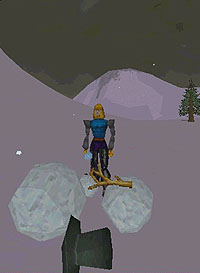

About Sports
Yes, it's pretty much what we do on Dereth -- kill stuff. But it's lots and lots of fun. Grab your weapon. Let's go kick some Olthoi butt!
(Pages may be slow to load)
Use the links to the left to view a compilation of the different weapons in Dereth, including Quest and Crafted weapons, store bought weapons, and a sampling of the random loot generated weapons. Links from quest weapons to their write-ups are now included. The sampling of random loot is included so that others can see some of the variety of weapons available in the game.
For information on Magic casting Wands, Orbs & Staffs, visit the Magic Section.
